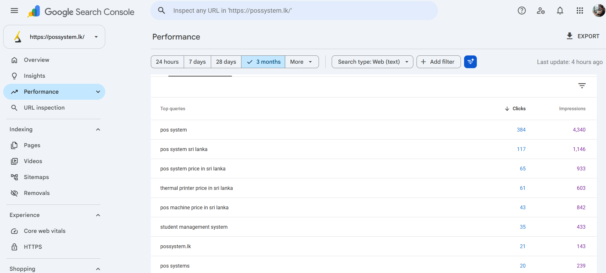

possystem.lk: #1 for "POS System Sri Lanka"
A direct look at the Google Search Console data behind one of the results listed on our case studies page — a Sri Lankan POS hardware and thermal printer retailer that now holds the top commercial search terms in its category.
POS System Sri Lanka (possystem.lk)
A retail & restaurant point-of-sale hardware supplier in Sri Lanka, selling POS terminals, thermal printers and related equipment. Before this engagement, the site had little organic visibility for the commercial terms buyers actually search — a common problem for hardware and equipment resellers competing against classifieds sites and marketplaces.
Structured Data & Local Commercial Intent
The work centered on structured product schema markup so Google could understand exactly what possystem.lk sells, technical SEO and Core Web Vitals fixes to remove crawl and speed barriers, and local entity authority building to compete for Sri Lanka-specific commercial searches like "pos system price in sri lanka" rather than only the generic global term.
380% More Organic Traffic, 5x More Sales Inquiries
Figures below are Google's own numbers, not ours — screenshotted directly from the possystem.lk Search Console property.
Live Search Console Data
This panel is connected directly to the possystem.lk Search Console property and updates on Google's own schedule — it's not a screenshot we control or edit. Numbers here may differ slightly from the dated snapshot below since this one keeps moving.

Top Queries From the Screenshot Above
| Query | Clicks | Impressions |
|---|---|---|
| pos system | 384 | 4,340 |
| pos system sri lanka | 117 | 1,146 |
| pos system price in sri lanka | 65 | 933 |
| thermal printer price in sri lanka | 61 | 603 |
| pos machine price in sri lanka | 43 | 842 |
| student management system | 35 | 433 |
| possystem.lk (brand) | 21 | 143 |
| pos systems | 20 | 239 |
Note: this table reflects Google Search Console's click and impression data only. Search Console's Performance report does not display ranking position in this view — the #1 position claims for "pos system", "pos system sri lanka", "thermal printer price in sri lanka", "pos machine price in sri lanka" and "pos system price in sri lanka" are based on separate, direct rank checks (see the full case studies page), not derived from this screenshot.
"We captured the top spot for every core commercial term we cared about, resulting in steady inbound leads every week."
— possystem.lk
About This Case Study
Is this Search Console data real, or a mockup?
It's real. The live panel on this page is a Looker Studio report connected directly to the possystem.lk Search Console property, and the screenshot below it is an unedited capture of the same property's Performance report from a trailing 3-month period.
Is the embedded live panel actually live, or just another screenshot?
It's genuinely live — a Google Looker Studio report pulling directly from the possystem.lk Search Console property. It updates on Google's own reporting schedule, which typically has a 1–3 day delay, so it can differ slightly from the dated screenshot further down the page. We don't control or edit what it shows.
What does the Search Console screenshot actually show?
It shows Google's own click and impression counts per search query for possystem.lk — for example 384 clicks and 4,340 impressions for "pos system" over the period shown. It does not show ranking position directly; position claims elsewhere on this page are based on separate rank checks, not this screenshot.
What SEO work produced this result?
Structured product schema markup, technical SEO and Core Web Vitals fixes, and local entity authority building focused on commercial search intent around POS hardware and thermal printers in Sri Lanka.
Can I get a similar case study for my own website?
Request a free SEO audit and we'll show you exactly where your site stands against these same fundamentals — schema, technical health and keyword targeting — before recommending anything.
Want Results Like This For Your Site?
Get a free audit and see exactly what's holding your rankings back.
Get Your Free SEO AuditThis page is one piece of our SEO service in Sri Lanka. Not sure who to hire? Here is how we rank the best SEO company in Sri Lanka.